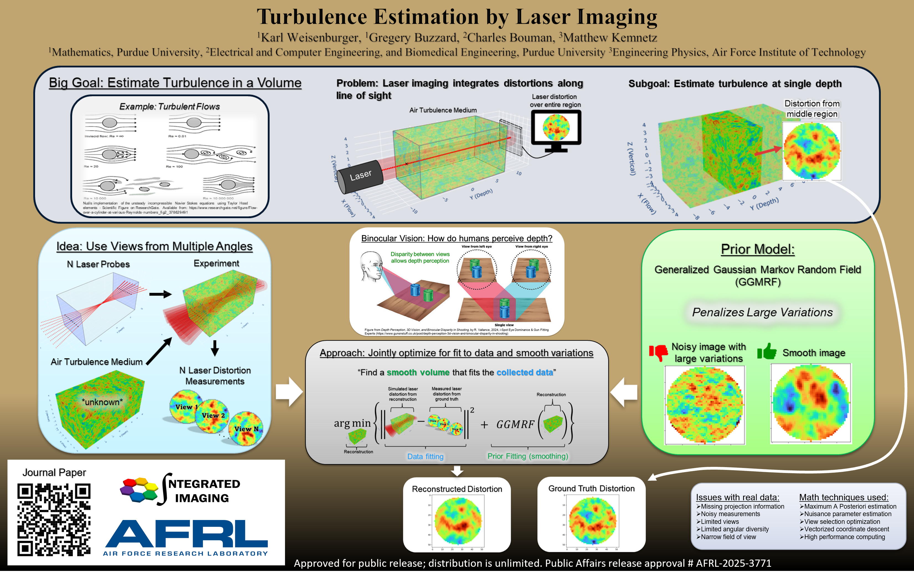

WindDensity-MBIR: Model-based iterative reconstruction for wind tunnel 3D density estimation
K. J. Weisenburger, G. T. Buzzard, C. A. Bouman, M. R. Kemnetz. Optical Engineering 65(8), 081820 (2026).
Publications & talks
Papers, open-source code, talks, and posters.
Open-source Python implementation of the model-based iterative reconstruction method for wind-tunnel 3D density estimation. Reproduces the results and figures from the Optical Engineering paper.
